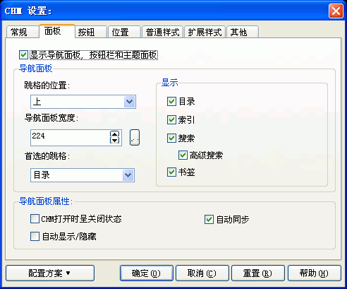

您可以通过在编译设置对话框里按"CHM设置..."按钮, 然后在"CHM设置"对话框里选取"面板"跳格看到这个对话框。关于这个对话框的使用请看下面的具体描述.

显示导航面板，按钮栏和主题面板:
导航面板 / 跳格的位置:
在这里您可以选择目录、索引、搜索、书签这四个跳格的位置，分上、左、下三种位置
- 默认是上部.
导航面板 / 导航面板的宽度:
在这里您可以调整目录、索引、搜索、书签这四个跳格的显示宽度，以增加导航面板的可视区域。.
注意：这里的宽度增加，相应地正文栏的宽度会减少，如果您的目录项不是特别长，建议使用默认设置。
导航面板 / 首选的跳格:
在这里您可以决定CHM打开后先显示哪个跳格 -
默认是目录跳格.
导航面板 / 显示 / 目录:
决定是否显示目录跳格。
如果您决定不显示目录跳格，请确保您的网页里的链接可以实现相互跳转的导航。
导航面板 / 显示 / 索引:
决定是否显示索引跳格。
导航面板 / 显示 / 搜索:
决定是否显示搜索跳格。
如果您决定不显示搜索跳格，则您将无法使用全文检索功能
- 即便您在“常规”对话框里选择了“支持全文检索”。
导航面板 / 显示 / 高级搜索:
决定是否显示高级搜索跳格。
只有在选中了显示搜索跳格后，这里的设置才有效。
导航面板 / 显示 / 书签:
决定是否显示书签跳格。
如果您的CHM文件比较大，选中显示书签跳格可以为CHM的使用者提供方便
- 可以通过添加书签的方式记住上次读到哪个页面。
导航面板属性 / CHM打开时呈关闭状态:
选中则CHM打开时不显示导航面板，用户必须按下工具栏上的“显示/隐藏”按钮才可以显示导航面板及四个跳格
- 这样的好处是增大了正文栏的可视区域。
注意：只有在“按钮”对话框的“显示按钮栏”一项被选中，用户才能通过按下工具栏上的“显示/隐藏”按钮来切换导航栏的显示与隐藏，否则用户将无法使用导航面板。
导航面板属性 / 自动显示/隐藏:
选中则由CHM文件来根据CHM是否获得焦点来决定导航面板的状态
- 即CHM获得焦点则显示导航面板，失去焦点则隐藏导航面板。
参见：
| 版权所有 © 2000-2007 国华软件 保留全部权利. |